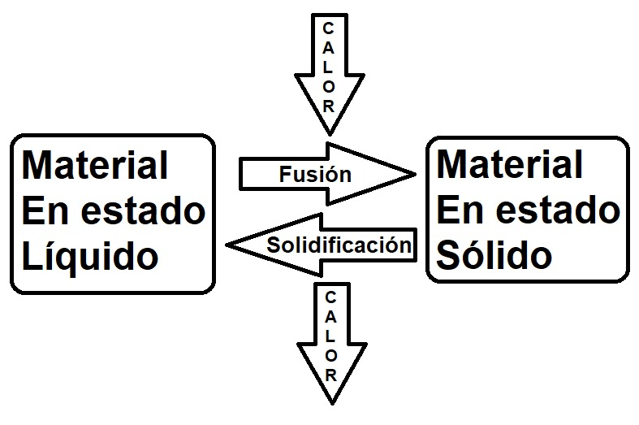
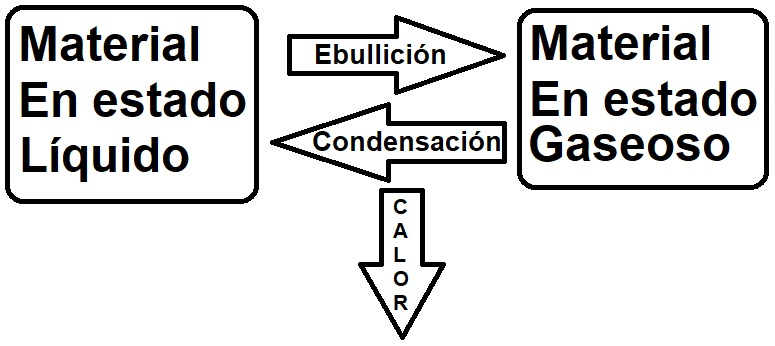
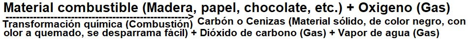

Act 2
Experimentamos con diferentes materiales.
| Material | ¿Cómo es antes de calentar? | ¿Cómo es después de calentar? |
|---|---|---|
| Manteca | ||
| Chocolate | ||
| Azúcar | ||
| Parafina | ||
| Corcho |
Los materiales y el calor


La combustión, un ejemplo de transformación química
• Actividad 5 del cuadernillo.

El corcho, el papel y el aluminio, a diferencia de lo que pasa con la manteca o el chocolate, no pasan a estado líquido independientemente de cómo sea la interacción con el calor. En todos estos casos, los cambios que ocurren se mantienen una vez que se enfrían y no vuelven a observarse las características que tenían antes del calentamiento. Estos materiales experimentan transformaciones químicas, es decir, que se transforman en otros materiales distintos a los de partida.